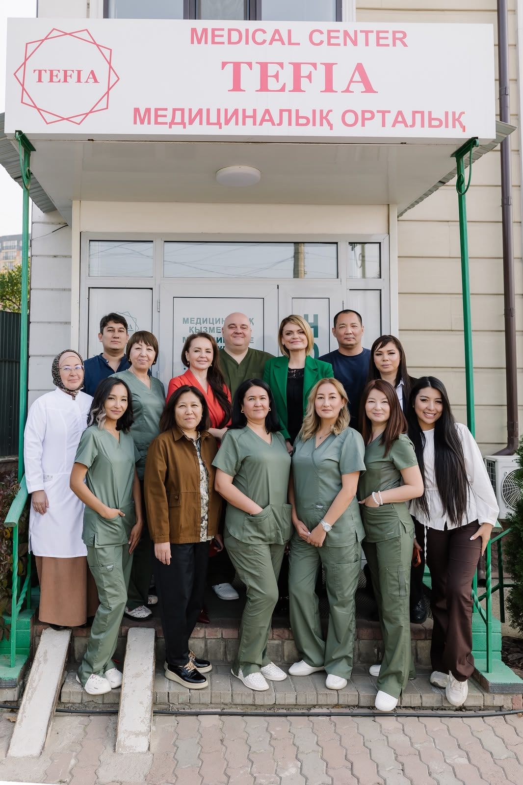
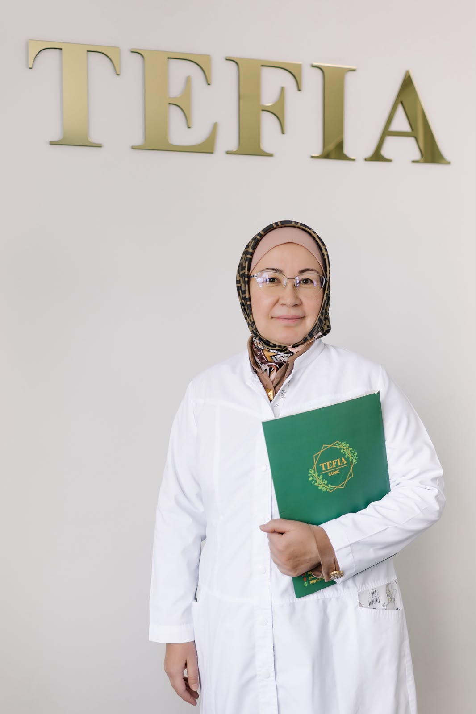
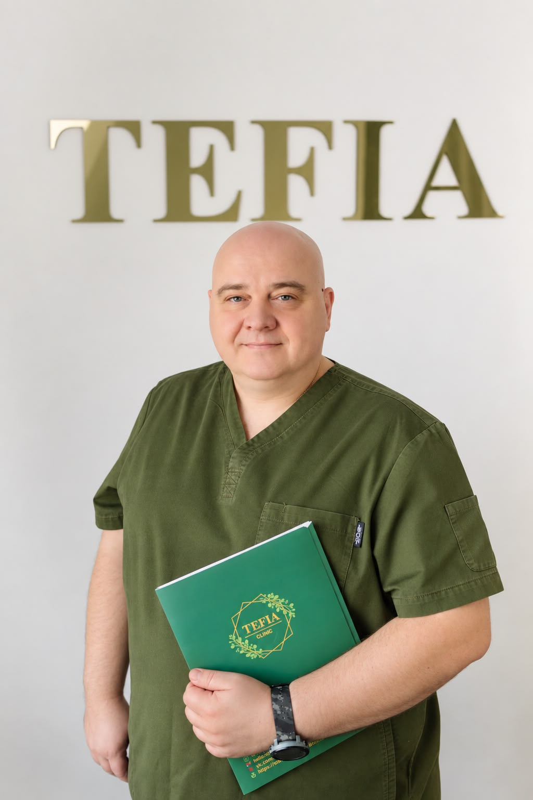
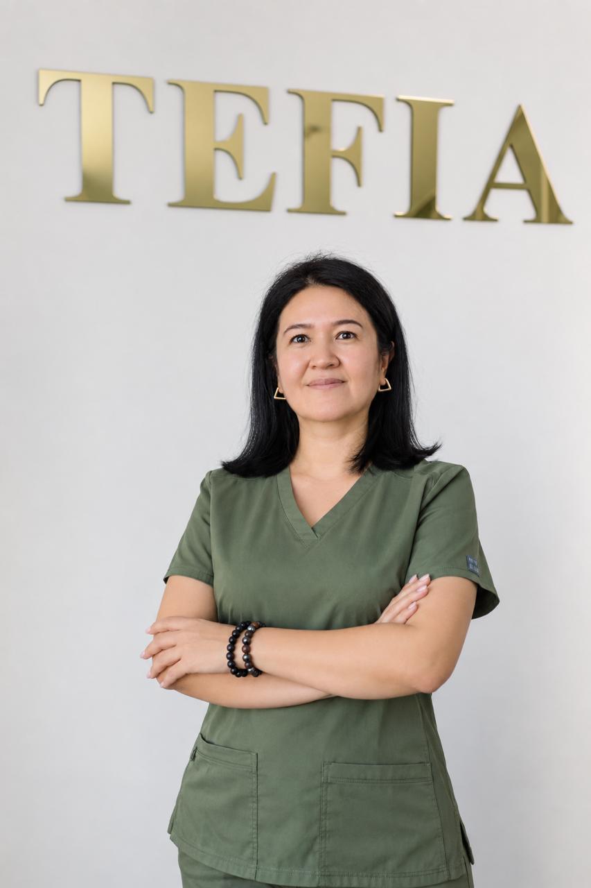

ЭКО бағдарламаларына еуропалық көзқарас: жеке протоколдар, заманауи эмбриология зертханасы және Украина мен Еуропа клиникаларында тәжірибе жинаған дәрігерлер командасы.

Барлық кезең бір орталықта өтеді. Зертхана, генетик немесе криобанкті бөлек іздеудің қажеті жоқ.
Классикалық ЭКО, ИКСИ, табиғи циклдегі бағдарламалар және криопротоколдар. Протоколды шаблонмен емес, сіздің тарихыңызға қарап таңдаймыз.
Толығырақ →Жұмыртқа жасушасы мен сперма донорлығы. Толық тексерілген анонимді донорлар, заңгерлік қолдау, фенотип бойынша іріктеу.
Толығырақ →Тексерілген суррогат аналармен бағдарламалар. ҚР заңнамасына сай толық медициналық және заңгерлік қолдау.
Толығырақ →Эмбриондарды имплантация алдында генетикалық тестілеу. Имплантация мүмкіндігін арттырып, жүктілікті жоғалту қаупін азайтамыз.
Толығырақ →Жұмыртқа жасушаларын, эмбриондар мен сперманы мұздатып сақтау. Ата-ана болуды кейінге қалдырыңыз немесе ем алдында материалды сақтап қойыңыз.
Толығырақ →Жүктілік басталған соң да сіздің тарихыңызды білетін дәрігерлермен қаласыз. Барлық скрининг, УДЗ және анализдер бізде.
Толығырақ →Еуропалық репродуктивті медицина қауымдастықтарының протоколдарымен жұмыс істейміз. Чек үшін артық процедура жоқ.
Украина мен Еуропа клиникаларында тәжірибе жинаған дәрігерлер мен эмбриологтар және Қазақстанның мықты мамандары.
Заманауи жабдықталған және өсіру жағдайлары үздіксіз бақыланатын эмбриология зертханасы.
10 пациентіміздің 9-ы ана атанады. Нақты мүмкіндіктер туралы алғашқы консультацияда-ақ ашық айтамыз.
Тарихыңызды, бұрынғы әрекеттер мен анализдерді талдаймыз. Тексерілу жоспарын құрамыз.
Барлық анализ бен диагностика клиникада 1–2 келуде жасалады. Артық ештеңе жоқ, тек протоколға әсер ететіні ғана.
Стимуляция, пункция, ұрықтандыру, өсіру және эмбрионды тасымалдау — бәрі эмбриологтың бақылауымен.
Жүктілікті растап, алғашқы апталарда қолдау көрсетеміз және босанғанға дейін бақылаймыз.

ЭКО, ҚРТ бағдарламалары мен криопротоколдарды жүргізеді

Ұрықтандыру мен эмбриондарды өсіруге жауап береді

ҚРТ бағдарламаларынан кейін жүктілікті бақылау